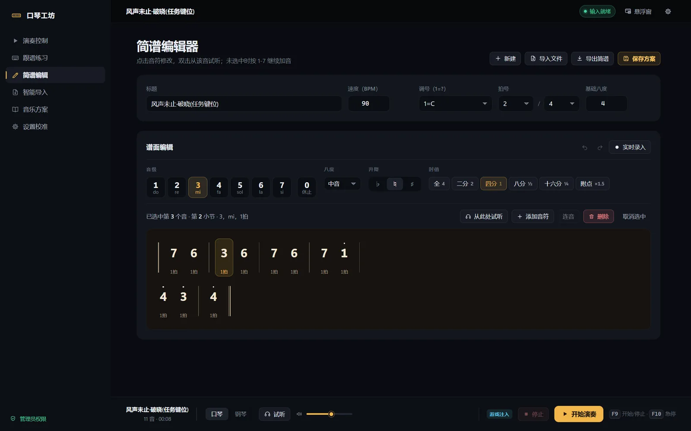

01
输入：三种方式，任选一种
逐音编辑简谱；MIDI 自动选轨、量化、检测调性；音频用 HPSS 抑制伴奏、提取主旋律。拖进来就能继续。
- 编辑器支持音级、八度、升降、时值与连音
- 音频识别支持自动 / 单声部 / 复音三种模式
- 曲谱以 JSON 保存在本地，随时可以再改
演奏流程
三个步骤，中间没有需要手写的按键表。改调、改速度，按键计划会跟着重排。
逐音编辑简谱；MIDI 自动选轨、量化、检测调性；音频用 HPSS 抑制伴奏、提取主旋律。拖进来就能继续。
按音域移调、超音域八度折返，再用动态规划挑出修饰键切换最少的组合。演奏、练习与宏导出共用同一份时间轴。
倒计时内切回游戏，物理扫描码注入；F10 急停并释放所有按键。失焦或光标离开窗口时自动停手。

一份计划，两种模式共用
1 · 2 · 3 · 4 · 5 · 6 · 7 · 高音 1
C3 – C#6，共 38 个连续半音；超出音域自动折返或整体移调。
核心能力
每一页只做一件主要的事。下面的界面都来自真实版本，点击可以看完整截图。
MIDI 自动选轨、量化、调性检测；音频以主旋律为目标，HPSS 抑制伴奏。三种来源，拖进来就能用。
横向滚动与下落式两种谱面，50%–125% 变速，逐音判定完美 / 优秀 / 良好，实时统计准确率与连击。
内置 Hohner Special 20 口琴与 Salamander 三角钢琴真实采样。编辑器、练习、悬浮窗与播放条共用一套音源。
无边框透明置顶，显示曲名、状态与倒计时，不获取游戏焦点。按钮不便点击时，直接用全局热键。
F9 开始 / 停止、F10 急停、悬浮窗显隐都可录制修改。注册失败或冲突时说明原因，录制期间自动暂停旧热键。
曲谱以 JSON 保存在本地，支持收藏、搜索与批量管理；可导出 AHK v1/v2、罗技 G HUB、CSV 时序表与触发表。
亲手试一下
下面是一段真实的判定演示：音符落进判定线时按下对应键。开始后可以用键盘，也可以直接点下面的键位。
演示只包含判定与发声，不包含移调、连击奖励与实际注入。App 内的判定与这里一致。
按下 Z，或点击开始练习
音符落进判定线时，按下对应键
本遍结果
100% 准确率
完美 0 · 优秀 0 · 良好 0 · 失误 0
练习曲：小星星 · 14 个音 · 演示速度 100%
示意：悬浮窗覆盖在游戏画面之上，实际位置可拖动。
游戏内
无边框、透明、置顶，不获取焦点。开始前有倒计时，随时暂停或急停；失焦、光标离开窗口会自动停手。
快捷键可在设置里录制修改，注册失败会说明原因。悬浮窗需要游戏使用无边框窗口模式；独占全屏时请改用全局热键。
查看平台支持与限制页面巡览
深石墨底色、单一琥珀聚光灯、青蓝只表示系统状态。每个页面只保留一个主操作。
点击任意截图放大查看，支持 ← → 切换。
下一步
Windows 10/11 完整功能；macOS 12+ 与 Linux 保留编辑、导入、练习、试听与宏导出。开源、离线、不修改游戏文件。